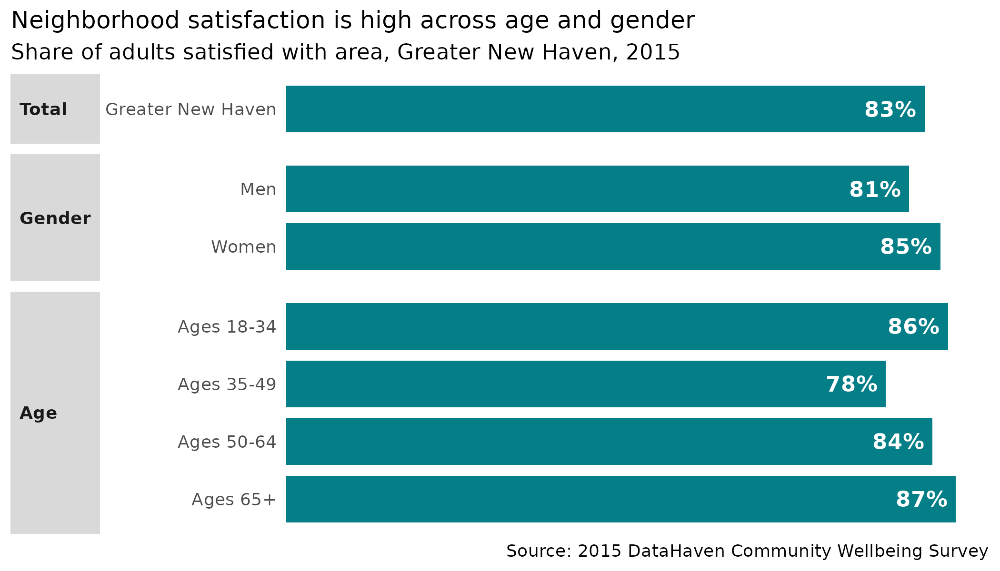
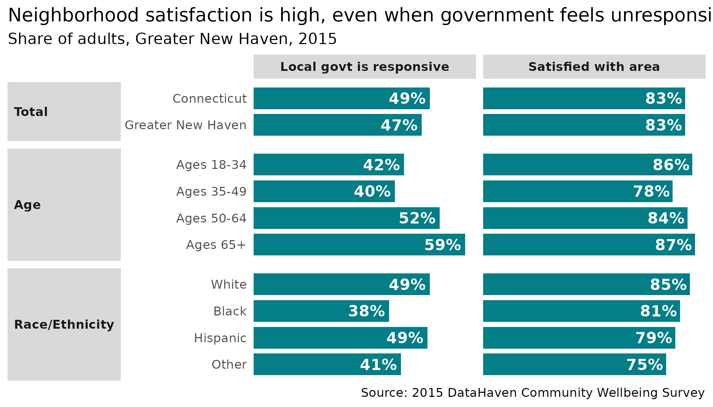

library(dplyr)
library(stringr)
library(cwi)
# tiny theme of a few cleaned up arguments
theme_clean <- function(...) {
theme_gray() +
theme(
strip.placement = "outside",
strip.text.y.left = element_text(angle = 0, hjust = 0),
strip.text = element_text(face = "bold"),
panel.grid = element_blank(),
panel.background = element_blank(),
plot.title.position = "plot",
plot.title = element_text(size = rel(1.1)),
axis.ticks = element_blank(),
...
)
}This is a quick look at using the crosstab-related functions that
were expanded upon to make the dcws package. There are 3
test files of crosstabs that ship with this package for internal testing
and illustration. This vignette recreates the data in the
cws_demo dataset.

Screenshot of DCWS crosstabs spreadsheet
Reading data
read_xtabs reads a crosstab file, but keeps it ugly—you
can then transform it into a ready-for-analysis data frame with
xtab2df. Below all the survey data, the file has a table of
weights. It’s hard to know where that table might be and how to separate
it from the data tables. read_xtabs reads until a marker
that distinguishes between the data and the weights;
read_weights reads everything below that marker.
The data for the first question looks like this:
xtab_in <- read_xtabs(system.file("extdata/test_xtab2015.xlsx", package = "cwi"), year = 2015)
xtab_in[1:7, ]
#> # A tibble: 7 × 26
#> x1 x2 x3 x4 x5 x6 x7 x8 x9 x10 x11 x12 x13
#> <chr> <chr> <chr> <chr> <chr> <chr> <chr> <chr> <chr> <chr> <chr> <chr> <chr>
#> 1 Q1. A… NA NA NA NA NA NA NA NA NA NA NA NA
#> 2 NA NA NA Gend… NA Age NA NA NA Race… NA NA NA
#> 3 NA Conn… Grea… M F 18-34 35-49 50-64 65+ White Blac… Hisp… Other
#> 4 Yes 0.82 0.82 0.8 0.84 0.85 0.77 0.83 0.86 0.84 0.8 0.78 0.72
#> 5 No 0.17 0.17 0.18 0.15 0.14 0.22 0.16 0.13 0.15 0.19 0.21 0.24
#> 6 Don't… 0.01 0.01 0.01 0.01 0.01 0.01 0.01 0.01 0.01 0.01 0.01 0.04
#> 7 Refus… 0 0 0 0 0 0 0 0 0 0 0 0
#> # ℹ 13 more variables: x14 <chr>, x15 <chr>, x16 <chr>, x17 <chr>, x18 <chr>,
#> # x19 <chr>, x20 <chr>, x21 <chr>, x22 <chr>, x23 <chr>, x24 <chr>,
#> # x25 <chr>, x26 <chr>Reshape the crosstabs into something you’d actually want to work with
using xtab2df. That snippet from the first chunk now looks
like this:
cws <- xtab2df(xtab_in)
cws |>
filter(code == "Q8") |>
utils::head()
#> # A tibble: 6 × 6
#> code question category group response value
#> <chr> <chr> <chr> <chr> <chr> <dbl>
#> 1 Q8 Do you have access to a car when you need… Connect… Conn… Very of… 0.85
#> 2 Q8 Do you have access to a car when you need… Greater… Grea… Very of… 0.82
#> 3 Q8 Do you have access to a car when you need… Gender M Very of… 0.83
#> 4 Q8 Do you have access to a car when you need… Gender F Very of… 0.82
#> 5 Q8 Do you have access to a car when you need… Age 18-34 Very of… 0.75
#> 6 Q8 Do you have access to a car when you need… Age 35-49 Very of… 0.88Combining demographic groups
Say we want to collapse those income brackets into just 3 groups. For that, use the weights table…and fix the group labels in the weights table to match the ones from the data (I’m only doing this for income, but education often needs reconciling as well). Obviously there won’t be weights for the total group; in doing weighted means, the easiest fix is to replace NAs with 1. (FYI, groups Yes and No correspond to the category of having children in the household.)
wts_in <- read_weights(system.file("extdata/test_xtab2015.xlsx", package = "cwi"))
wts_in
#> # A tibble: 23 × 2
#> group weight
#> <chr> <dbl>
#> 1 Male 0.47
#> 2 Female 0.53
#> 3 18 to 34 0.292
#> 4 35 to 49 0.244
#> 5 50 to 64 0.236
#> 6 65 and older 0.173
#> 7 White 0.727
#> 8 African American/Black 0.158
#> 9 Hispanic 0.109
#> 10 Other 0.103
#> # ℹ 13 more rows
wts <- wts_in |>
mutate(group = group |>
str_replace("(?<=\\d) to (?=[\\$\\d])", "-") |>
str_replace_all(",000", "K") |>
str_replace("Less than (?=\\$)", "<") |>
str_replace(" or more", "+"))
income_lvls <- list(
"<$30K" = c("<$15K", "$15K-$30K"),
"$30K-$100K" = c("$30K-$50K", "$50K-$75K", "$75K-$100K"),
"$100K+" = c("$100K-$200K", "$200K+")
)
cws |>
filter(code == "Q8", category %in% c("Greater New Haven", "Income")) |>
left_join(wts, by = "group") |>
mutate(across(category:response, forcats::as_factor)) |>
tidyr::replace_na(list(weight = 1)) |>
collapse_n_wt(c(code, category:response), .lvls = income_lvls)
#> # A tibble: 28 × 5
#> code category group response value
#> <chr> <fct> <fct> <fct> <dbl>
#> 1 Q8 Greater New Haven Greater New Haven Very often 0.82
#> 2 Q8 Greater New Haven Greater New Haven Fairly often 0.04
#> 3 Q8 Greater New Haven Greater New Haven Sometimes 0.06
#> 4 Q8 Greater New Haven Greater New Haven Almost never 0.02
#> 5 Q8 Greater New Haven Greater New Haven Never at all 0.06
#> 6 Q8 Greater New Haven Greater New Haven Don't know 0
#> 7 Q8 Greater New Haven Greater New Haven Refused 0
#> 8 Q8 Income <$30K Very often 0.597
#> 9 Q8 Income <$30K Fairly often 0.0697
#> 10 Q8 Income <$30K Sometimes 0.124
#> # ℹ 18 more rowsRescaling
We generally want to remove non-answers (don’t know, refused) from the denominator, then rescale the response values. Usually those non-answers only account for 1 or 2 percentage points and don’t change values much, but occasionally they’re large enough to make a noticeable difference. For consistency, I always remove non-answers, even when they’re small.
With non-answers:
cws |>
filter(code == "Q1", category %in% c("Greater New Haven", "Gender", "Age"))
#> # A tibble: 28 × 6
#> code question category group response value
#> <chr> <chr> <chr> <chr> <chr> <dbl>
#> 1 Q1 Are you satisfied with the city or area … Greater… Grea… Yes 0.82
#> 2 Q1 Are you satisfied with the city or area … Gender M Yes 0.8
#> 3 Q1 Are you satisfied with the city or area … Gender F Yes 0.84
#> 4 Q1 Are you satisfied with the city or area … Age 18-34 Yes 0.85
#> 5 Q1 Are you satisfied with the city or area … Age 35-49 Yes 0.77
#> 6 Q1 Are you satisfied with the city or area … Age 50-64 Yes 0.83
#> 7 Q1 Are you satisfied with the city or area … Age 65+ Yes 0.86
#> 8 Q1 Are you satisfied with the city or area … Greater… Grea… No 0.17
#> 9 Q1 Are you satisfied with the city or area … Gender M No 0.18
#> 10 Q1 Are you satisfied with the city or area … Gender F No 0.15
#> # ℹ 18 more rowsWithout nonanswers (using sub_nonanswers defaults of
“Don’t know” & “Refused”):
cws |>
filter(code == "Q1", category %in% c("Greater New Haven", "Gender", "Age")) |>
sub_nonanswers()
#> # A tibble: 14 × 6
#> code question category group response value
#> <chr> <chr> <chr> <chr> <fct> <dbl>
#> 1 Q1 Are you satisfied with the city or area … Greater… Grea… Yes 0.828
#> 2 Q1 Are you satisfied with the city or area … Greater… Grea… No 0.172
#> 3 Q1 Are you satisfied with the city or area … Gender M Yes 0.808
#> 4 Q1 Are you satisfied with the city or area … Gender M No 0.182
#> 5 Q1 Are you satisfied with the city or area … Gender F Yes 0.848
#> 6 Q1 Are you satisfied with the city or area … Gender F No 0.152
#> 7 Q1 Are you satisfied with the city or area … Age 18-34 Yes 0.859
#> 8 Q1 Are you satisfied with the city or area … Age 18-34 No 0.141
#> 9 Q1 Are you satisfied with the city or area … Age 35-49 Yes 0.778
#> 10 Q1 Are you satisfied with the city or area … Age 35-49 No 0.222
#> 11 Q1 Are you satisfied with the city or area … Age 50-64 Yes 0.838
#> 12 Q1 Are you satisfied with the city or area … Age 50-64 No 0.162
#> 13 Q1 Are you satisfied with the city or area … Age 65+ Yes 0.869
#> 14 Q1 Are you satisfied with the city or area … Age 65+ No 0.131Case study
For many questions, what you probably want to report out or display is the share of people who answered yes, or the combination of “strongly agree” & “somewhat agree”.
library(ggplot2)
cws |>
filter(code == "Q1", category %in% c("Greater New Haven", "Gender", "Age")) |>
sub_nonanswers() |>
filter(response == "Yes") |>
mutate(across(category:group, forcats::as_factor),
group = group |>
forcats::fct_recode(Men = "M", Women = "F") |>
forcats::fct_relabel(str_replace, "(^\\b)(?=\\d+)", "Ages "),
category = forcats::fct_recode(category, Total = "Greater New Haven"),
lbl = scales::percent(value, accuracy = 1)
) |>
ggplot(aes(x = forcats::fct_rev(group), y = value)) +
geom_col(width = 0.8, fill = "#047e87") +
geom_text(aes(label = lbl), hjust = 1, nudge_y = -0.01, fontface = "bold", color = "white") +
scale_y_continuous(breaks = NULL, expand = expansion(mult = c(0, 0.05))) +
coord_flip() +
facet_grid(rows = vars(category), scales = "free_y", space = "free_y", switch = "y") +
theme_clean() +
labs(
x = NULL, y = NULL,
title = "Neighborhood satisfaction is high across age and gender",
subtitle = "Share of adults satisfied with area, Greater New Haven, 2015",
caption = "Source: 2015 DataHaven Community Wellbeing Survey"
)
Note that different questions have different response values. In
general, it’s better to work with each question separately; easy and
safe ways to do this are to make separate data frames for different
questions (e.g. with dplyr::filter), or by splitting
(e.g. with split(data$question)) and iterating with
lapply or purrr::map before binding or joining
back together.
cws |>
distinct(code, question, response) |>
filter(!stringr::str_detect(response, "(Don't know|Refused)")) |>
group_by(question = stringr::str_trunc(question, width = 100)) |>
summarise(responses = paste(response, collapse = ", "))
#> # A tibble: 8 × 2
#> question responses
#> <chr> <chr>
#> 1 (If attacked in the past 12 months) Were you physically injured in … Yes, No
#> 2 (If smoked 100 cigarettes) Do you currently smoke cigarettes every … Every da…
#> 3 Are you satisfied with the city or area where you live? Yes, No
#> 4 As a place to live, is the city or area where you live getting much… Much bet…
#> 5 Do you have access to a car when you need it? Would you say you hav… Very oft…
#> 6 Have there been times in the past 12 months when you did not have e… Yes, No
#> 7 Have you smoked at least 100 cigarettes in your entire life? [100 c… Yes, No
#> 8 How responsive local government is to the needs of residents Excellen…A common use is to show multiple related indicators side by side in a table or chart. Here I’m prepping to show both the question about neighborhood satisfaction (yes / no) and the responsiveness of local government (combined excellent & good).
govt <- cws |>
mutate(across(c(category, group), forcats::as_factor)) |>
filter(code %in% c("Q1", "Q3A")) |>
split(~code)
cws_out <- list()
cws_out[["satisfied_with_area"]] <- govt$Q1 |>
sub_nonanswers() |>
filter(response == "Yes")
cws_out[["local_govt_is_responsive"]] <- govt$Q3A |>
mutate(response = forcats::as_factor(response) |>
forcats::fct_collapse(excellent_good = c("Excellent", "Good"))) |>
group_by(across(-value)) |>
summarise(value = sum(value)) |>
sub_nonanswers(nons = c("Don't know enough about it in order to say", "Refused")) |>
filter(response == "excellent_good")
#> `summarise()` has grouped output by 'code', 'question', 'category', 'group'.
#> You can override using the `.groups` argument.
cws_out |>
bind_rows(.id = "indicator") |>
mutate(
group = group |>
forcats::fct_relabel(str_replace, "(^\\b)(?=\\d+)", "Ages ") |>
forcats::fct_recode(Black = "Black/Afr Amer"),
category = ifelse(as.character(category) == as.character(group), "Total", as.character(category)) |> forcats::as_factor(),
lbl = scales::percent(value, accuracy = 1),
indicator = camiller::clean_titles(indicator)
) |>
filter(category %in% c("Total", "Age", "Race/Ethnicity")) |>
ggplot(aes(x = forcats::fct_rev(group), y = value)) +
geom_col(width = 0.8, fill = "#047e87") +
geom_text(aes(label = lbl), hjust = 1, nudge_y = -0.01, fontface = "bold", color = "white") +
scale_y_continuous(breaks = NULL, expand = expansion(mult = c(0, 0.05))) +
coord_flip() +
facet_grid(rows = vars(category), cols = vars(indicator), scales = "free", space = "free_y", switch = "y") +
theme_clean() +
labs(
x = NULL, y = NULL,
title = "Neighborhood satisfaction is high, even when government\nfeels unresponsive",
subtitle = "Share of adults, Greater New Haven, 2015",
caption = "Source: 2015 DataHaven Community Wellbeing Survey"
)